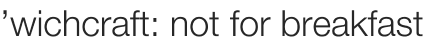

’wichcraft: not for breakfast
Don’t ever order breakfast from ’wichcraft. I thought I’d treat us for my birthday with an 8 a.m. delivery of poached egg and onion frittata sandwiches. By 8:20, when I hadn’t heard a thing and Nathan was wondering what I was doing still here and not eating, I called the store. The woman mumbled something about them being out of ciabatta rolls. “I think I left you a voicemail,” she said. So I told her there wouldn’t be anyone here to accept the delivery, and I demanded a full refund.
So much for their slick online ordering system! So much for my growing love of ’wichcraft! If a restaurant can’t fulfill deliveries in the first slot of the day, it hasn’t got a prayer here or anywhere. Weekday breakfast seems especially important, since everyone is in a hurry.
Comments
Aw! Happy birthday, sweetheart! I’m sorry I wasn’t there to cook your breakfast for you; what a sad story! So did you just eat something at home or did you and Nathan go out somewhere?
As if I were presentable at this hour! He just had a bagel. Don’t worry though, I have loads of stuff planned for later in the day.
Psttt! If anyone would like information on Leland’s birthday and you’re not a crazy stalker of cute kitchen bloggers, write me at nathan@technically.us .
HAPPY BIRTHDAY LELAND! i hate that ‘wichcraft can’t their act together. what a way to start the day…
it’ll get better though :D
HAPPY BIRTHDAY!
See you tomorrow night at the Food Blogger Party.
Happy birthday, Leland, and I hope you’re making up for your disappointing birthday breakfast with a big old night on the town.
Hey, Leland. Too bad about ’wichcraft, but happy birthday, nonetheless. I hope it was good one!
Happy Birthday, Leland! Hope you had a great day despite the disappointing breakfast ;)
haha- dat was funny… hope u had a good
B-Day….
Add a comment